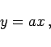

Die lineare Funktion
| y=ax+b | (2.39) |
Für a > 0 wächst die Funktion monoton an, für a < 0 nimmt sie monoton ab; für a =0 ist sie konstant. Die Achsenschnitte A und B liegen bei (-b/a,0) und (0,b) (s. auch Gleichung der Geraden). Mit b=0 ergibt sich die direkte Proportionalität
|  | (2.40) |
graphisch eine Gerade durch den Koordinatenursprung (rechte Abbildung). Der konstante Faktor a heißt Proportionalitätsfaktor.